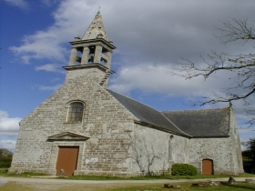
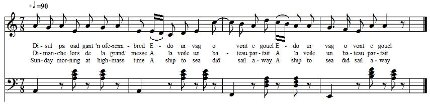

Ar peñse
Le naufrage - The shipwreck

"Notre-Dame de Bonne-Nouvelle" de Melgven (1769 -19ème s.)
"Chant communiqué par l'Abbé Guillerm "il y a une quarantaine d'année" (en 1939, soit vers 1899)
Chanté par M. Piriou et Philomène Guéroné de Trégunc
et publié par le Chanoine Henri Pérennès dans "Les Annales de Bretagne", volume 46 3-4, page 300 et ss, en 1939.

Mélodie
Le Chanoine Pérennès n'indique pas d'air. L'air ci-dessus
a été recueilli par Duhamel auprès de Maryvonne
Le Flem, de Port-Blanc, accompagnant le chant "Matelina Troadec" (Gwerzioù 1, p. 130)
Arrangement Christian Souchon (c) 2013
Source : le site de M. Pierre Quentel (voir "liens")
|
AR PEÑSE 1. Disul pa oad gant 'n oferenn-bred Edo ur vag o vont e gouel (div w.) [1] 2. Pa oad 'n eur gant ar gosperoù Edo ar vag war he genoù. 3. An Troadeg kozh war bord an aod En em gave ken digonfort 4. An Troadeg kozh a lare 'n droc'hiñ bara d'e vugale: 5. - Me garfe ' vec'h beuzet toud er ster, Ma vije bet va merc'h Katell ganin ba'r ger. 6. - Va zad, va zad, c'hwi -peus pec'het Rag an dour-mor zo benniget Hag an dour ster, hennez n'eo ket. - [2] 7. N'oa ket e gomz peurechuet E verc'h Katell 'n ti zo degouet. 8. - Va merc'h Katell din lavarit: Petra zo kaoz n'oc'h ket beuzet? 9. - 'N Itron Varia ar Folgoat Lakas 'r skabell dindan va zroad. 10. 'N Itron Varia ar Forwen Skubas an dour deus va c'herc'henn. [3] 11. Deomp-ni va mamm, deomp-ni, va zad Da gas ur presañt d'ar Folgoat: 12. Ur banniel seiz ha voulouzed. Ar groaz arc'hant hag alaouret, 13. Ar gwiskamañt da deir aoter, Hag an oferenn bep Gwener. - |
LE NAUFRAGE 1. Dimanche lors de la grand' messe A la voile un bateau partait. (bis) [1] 2. Mais lorsque vint l'heure des vêpres Le frêle esquif a chaviré. 3. Le vieux Troadec, sur la grève, Ne pouvait point se consoler. 4. Coupant le pain pour sa marmaille, Le vieux Troadec marmonnait: 5. - Que n'êtes-vous à la rivière! Sans Catell allés vous noyer! 6. - Mais c'est un blasphème mon père: L'eau de mer est un bénitier, L'eau de rivière, eau de péché. - [2] 7. A peine ces mots l'on achève Que Catell à l'huis a frappé. 8. - Catherine, quelle est la cause Qui t'empêcha de te noyer? 9. - Marie du Folgoët me protège: Elle mit un banc sous mes pieds. 10. Marie du Forwen vint en hâte L'eau près de mon cou balayer. [3] 11. Allez mon père et vous, ma mère, Porter une offrande au Folgoët: 12. De soie précieuse une bannière, Et une croix d'argent doré 13. Et pour trois autels un calice; Chaque vendredi qu'un office D'action de grâces soit chanté. Traduction: Christian Souchon (c) 2013 |
1. Sunday morning at high-mass time
A ship to sea did sail away (twice) [1]
2. When for vespers they rang the chime
The ship was capsized in the bay
3. Old Troadec on the shore stayed
And felt disheartened a great deal.
4. To his children sharing some bread
He disclosed how he did feel:
5. - I wish you were drowned in the brook,
And my daughter Kate were back here.
6. - If you say so, you sin. Now, look:
Sea water is holy, I'm sure,
But stream water is not, I fear. - [2]
7. Before his speech came to a pause,
The door opened and in came Kate.
8. - My daughter Kate, tell me the cause
Of your surprising, lucky fate?
9. - Twas Our Lady of Folgoat:
Upon a stool she held me close.
10. And Our Lady of Forwen had
Swept the sea away from my nose. [3]
11. Father, mother, you will consent
To Folgoat Church gifts to present:
12. Of velvet and silk a banner
And a cross of gilded silver.
13. And clothes on three altars spread.
And have each Friday a mass read! -
Translation: Christian Souchon (c) 2013
Notes
Il s'agit sans doute des chants "Saint Mathurin de Moncontour" (p.127), où l'on voit une femme enceinte sauvée provisoirement de la noyade grâce à l'intervention de ce saint, et "Mathurine Troadec" (p.131), où l'héroïne contrainte par ses parents d'aller à un pardon montrer son enfant au marquis qui l'a séduite, parvient grâce à l'intercession du même saint à sauver le petit innocent du naufrage où elle-même périt... Saint-Mathurin de Moncontour (à une vingtaine de km au SE de Saint-Brieuc) a longtemps été l'un des lieux de pèlerinage les plus fréquentés de Bretagne. [2] L'Abbé Guillerm explique comme suit cette strophe sibylline: "Un groupe de marins parlait des récents naufrages... Tout à coup [l'un d'eux] dit: Que voulez-vous, la mer est bénite comme les cimetières, il faut bien que quelques-uns y trouvent leur tombeau, car avant la fin du monde, le cimetière de la mer doit contenir autant de cadavres plus un, que tous les cimetières réunis de la terre [...] Cette croyance m'a été confirmée encore à Trégunc par plusieurs personnes, en novembre 1903, notamment par les deux personnes qui me chantèrent cette pièce, et qui m'en firent elles-mêmes la remarque. " [3] "Voir dans le Barzaz-Breiz de M. de La Villemarqué, la pièce intitulée Notre-Dame du Folgoët. où la Vierge balaie le feu de dessous les pieds et d'autour du sein. [...] Quant à la mention de N.-D. de Forwen, elle est propre au chant que nous étudions. Le village de Forwen se trouve en la paroisse de Melgven (Finistère) à 500 mètres de la chapelle de Creac'higel (N.-D. de Bonne-Nouvelle). Cette chapelle est située au bord de la route qui conduit de Rosporden à Melgven et un dicton populaire [...] de Trégunc dit: "Itron Varia ar Forwen / Savaz he iliz war bord an hent" (Madame Marie de Forwen édifia son église sur le bord de la route). [5] C'est La Villemarqué qui nota le premier 2 versions de ce chant, intitulées "Porscotour" et "Katellik An Troadec", dans son carnet de collecte N°1. |
He certainly means the songs "Saint Mathurin ofMoncontour" (p.127), staging a pregnant woman temporarily saved from drowning by the intercession of this holy man, and "Mathurine Troadec" (p.131), whose female hero, forced by her parents to go to a pardon and show a baron who seduced her his illegitimate child, manages with the help of the same holy protector to prevent the innocent child from being drowned in the shipwreck where she perishes... Saint-Mathurin of Moncontour (ca. 20 km south-west of Saint-Brieuc) used to be one of the favourite pilgrimage places in Brittany. [2] The Abbé Guillerm gives for this enigmatic verse the following explanation: "A party of sailors discussed the latest wrecks of ships... All of a sudden [one of them] exclaimed: You can't change it, the sea is a holy place, same as churchyards. Some people must have their grave there, since before Doomsday, the sea cemetery must harbour as many corpses, plus one, as all churchyards on earth put together [...] This creed was confirmed to me at Trégunc by other people, in November 1903, among others by the two singers of this piece who spontaneously made a remark to that effect. [3] "See in the Barzaz-Breiz of M. de La Villemarqué, the song titled Notre-Dame du Folgoat. in which Our Lady sweeps the fire from underneath the feet and around the neck of the victim.[...] As for the mention of Our Lady of Forwen, it will be found only in the song at hand. The hamlet Forwen is part of the parish Melgven (Finistère) and is located 500 metres away from Creac'higel chapel (also known as "N.-D. de Bonne-Nouvelle"). This chapel stands beside the road from Rosporden to Melgven as stated in the [...] Trégunc saying: "Itron Varia ar Forwen / Savaz he iliz war bord an hent" (Our Lady of Forwen erected her church by the side of the road). [4] It was La Villemarqué who first recorded 2 versions of this song, titled "Porscotour" and "Katellik An Troadec", in his collecting book #1. |
des chants de "tombeaux indignes" étudiés dans CANNIBALES, TOMBEAUX ET PENDUS un essai au format LIVRE DE POCHE 
de Christian Souchon |
"indecorous grave songs" presented, in French, in CANNIBALES, TOMBEAUX ET PENDUS (Cannibals, graves and gallows) as a PAPERBACK BOOK
by Christian Souchon |
Cliquer sur le lien ou l'image - Click link or picture for more info
Retour à Notre-Dame du Folgoat du Barzhaz
"Ar Vag kollet" également publié par le Chanoine Pérennès.
"Porzh-Kotour" du Cahier N° 1 de Keransquer.
"Ana Chapalan" collecté par de Penguern.
Taolenn